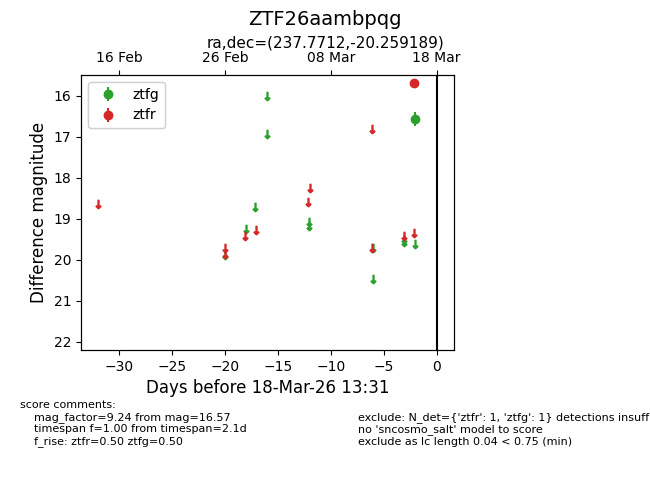
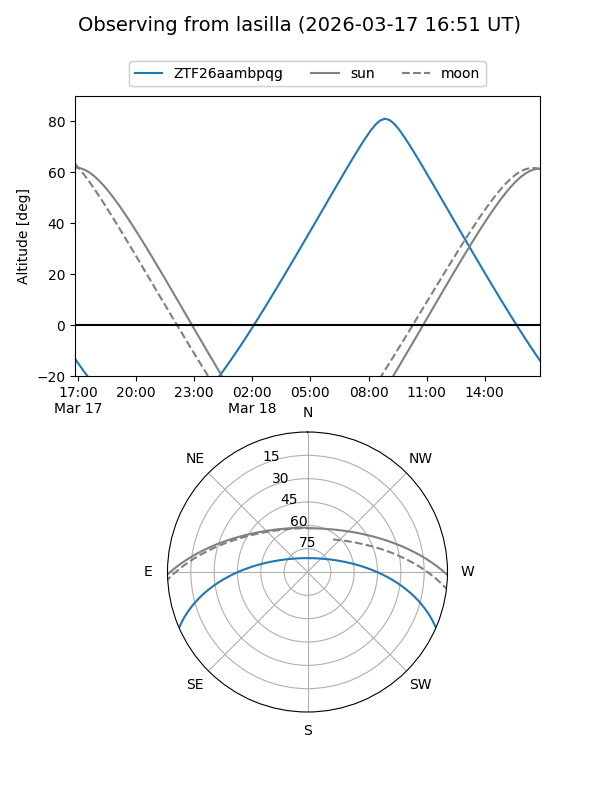
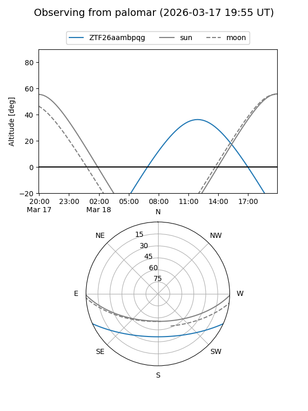

ZTF26aambpqg
Target ZTF26aambpqg at 2026-03-18 13:33
Aliases and brokers:
FINK: link
Lasair: link
ALeRCE: link
alt names
ZTF26aambpqg (ztf,fink_ztf)
Coordinates:
equatorial (ra, dec) = 237.7712,-20.25919
equatorial (HMS+DMS) = 15:51:05.08,-20:15:33.08
galactic (l, b) = (350.2350,+25.68362)
Flags:
Photometry:
last ztfg=16.57, ztfr=15.69
1 ztfg, 1 ztfr detections
Lightcurve

Visibility


Additional plots